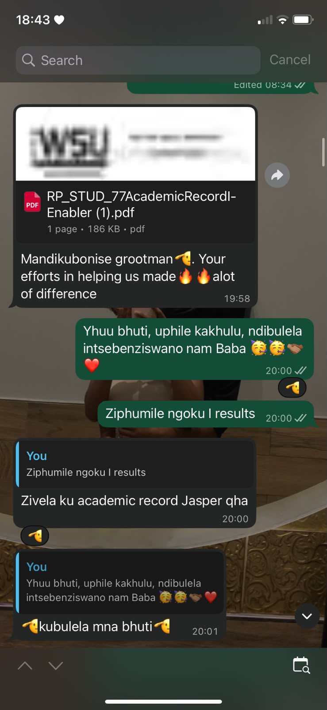

Portfolio evidence
Gallery / evidence
Examples of student engagement, group work, learner progress, and active tutorial facilitation.
Student Engagement & Group Work

These examples show how I put theory into practice and centre sessions on students by giving them an active role in their learning and checking their understanding of the content. The sessions encourage innovation and collaboration. I aim to teach students how to fish rather than fish for them.
Testimony

This message shares the results of one of the students I tutored. Seeing progress like this is more than a job well done; it motivates me and confirms that I should keep learning, showing up for my students, and growing as a tutor.
Tutorial
This is how I make sessions active: I give my students the stage and step in where needed to guide and support their learning.